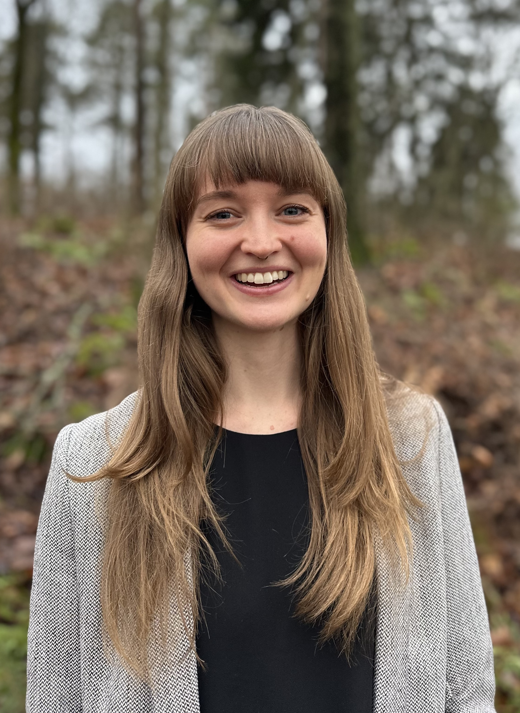

Conservation Data & Policy Consulting
Buenos Aires + Remote · Spatial Data · Biodiversity Finance · Accountability

About
Conservation and policy professional working at the intersection of spatial data, biodiversity finance, and accountability. Based in Buenos Aires, working internationally.
My research focuses on barriers to fine-grained spatial tracking of biodiversity aid under the Kunming–Montreal Global Biodiversity Framework.
Services
Selected Experience
Research
Contact
Open to consulting projects in conservation data, spatial analysis, and biodiversity finance.
LinkedIn ↗ Email ↗